class: center, middle <img src="https://www.saa-authors.eu/picture/739/ftw_768/saa-mtcwmza4nzq5mq.jpg" width="50%"> # Analysis, Design and Software Architecture ## Software Engineering Session 5 Helge Pfeiffer, Assistant Professor,<br> [Research Center for Government IT](https://www.itu.dk/forskning/institutter/institut-for-datalogi/forskningscenter-for-offentlig-it),<br> [IT University of Copenhagen, Denmark](https://www.itu.dk)<br> `ropf@itu.dk` --- class: center, middle # Info, Feedback, and Recap --- ### Assignment feedback **Conformance to requirements!** > The PDF file must conform to the following **naming convention: `group_<x>_<id1>_<id2>_<id3>_assignment_02.pdf`**, where `<x>` is replaced by the number of your group from [README_GROUPS.md](./README_GROUPS.md) and `<id1>`, `<id2>`, and `<id3>` are your respective ITU identifiers. > > <https://github.com/itu-bdsa/assignment-02/#submitting-the-assignment> Which of the following PDF files conforms to the file name requirement above? 1. `Assignment02.rar` 2. `group__1___aaaa___bbbb___cccc___assignment_02_.pdf` 3. `group_1_aaaa_bbbb_cccc_assignment_02.pdf` --- ### Assignment feedback **Conformance to requirements!** > The PDF file must conform to the following **naming convention: `group_<x>_<id1>_<id2>_<id3>_assignment_02.pdf`**, where `<x>` is replaced by the number of your group from [README_GROUPS.md](./README_GROUPS.md) and `<id1>`, `<id2>`, and `<id3>` are your respective ITU identifiers. > > <https://github.com/itu-bdsa/assignment-02/#submitting-the-assignment> Which of the following PDF files conforms to the file name requirement above? 1. ✗ `Assignment02.rar` 2. ✗ `group__1___aaaa___bbbb___cccc___assignment_02_.pdf` 3. ✓ `group_1_aaaa_bbbb_cccc_assignment_02.pdf` --- ### Assignment feedback Which of the following is required for hand-in? 1. Handing in a link to a repository only 2. Handing in a PDF file only 3. Handing in a link to a repository and a PDF file --- ### Assignment feedback Which of the following is required for hand-in? 1. ✗ Handing in a link to a repository only 2. ✗ Handing in a PDF file only 3. ✓ Handing in a link to a repository **and** a PDF file --- ### Quiz — Correction **Last week:** What should be fixed in the following diagram: 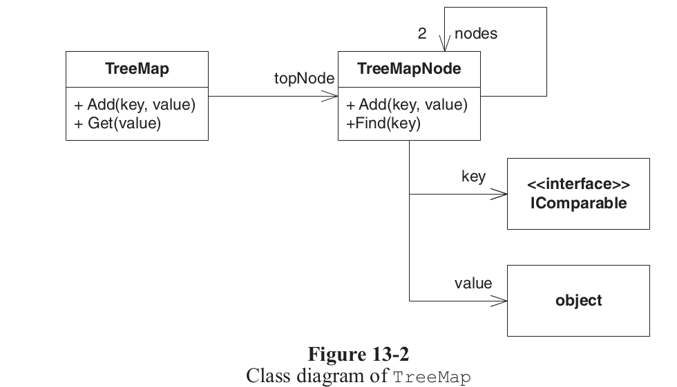 * I suggested capitalizing the `object` class name in the diagram above. * That is in line with UML syntax. * However, Martin likely meant to refer to C#'s inbuilt type `object`. - If that is the case, one should make the intention clear with a comment --- ### Quiz 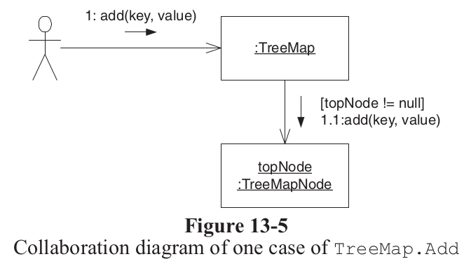 > A link exists wherever one object can send a message to another. Traveling over those links are the messages themselves. They are depicted as the smaller arrows. The messages are labeled with the name of the message, its sequence number, and any guards that apply. What is a _message_ in OO? --- ### Quiz 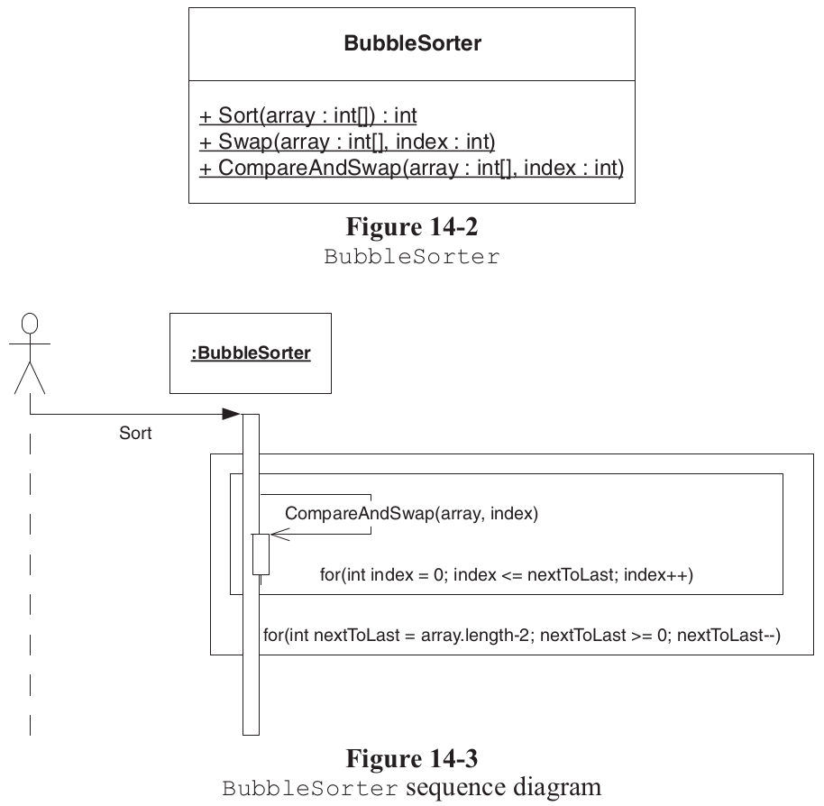 Why are these not good UML diagrams? --- ### Quiz Why would one change the simple class structure to the left into the more difficult one to the right? <table> <tr> <td>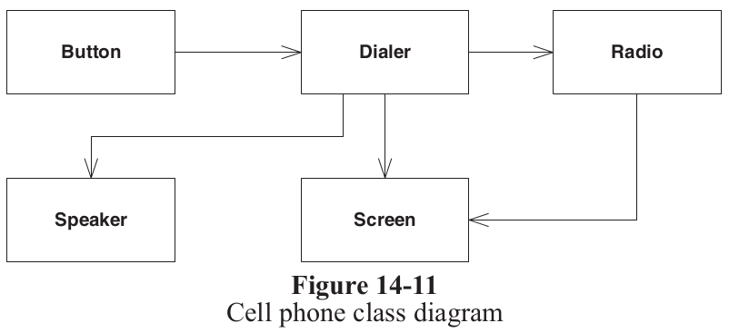</td> <td>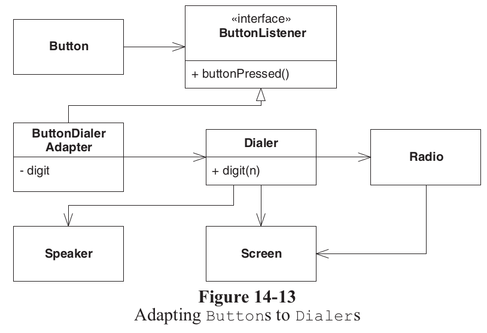</td> </tr> </table> --- class: center, middle # SOLID Design Principles --- ### SOLID Design Principles — History We are actually reading the book by the person who coined these principles for object-oriented design. * First mention of SOLID design principles? <https://groups.google.com/g/comp.object/c/WICPDcXAMG8?hl=en#adee7e5bd99ab111> * First article of SOLID design principles? <http://butunclebob.com/ArticleS.UncleBob.PrinciplesOfOod> -- You have to be aware of the time when they were established/popularized. Professional software development (or enterprise software development) in the mid-nineties to early two-thousands. * Building large object-oriented monoliths, * with statically typed object-oriented languages, * with slow compilers, * limited IDE support, * slow deployment cycles, and * slow feedback cycles. --- ### Design in _agile_ projects At that time, extreme programming and agile development were still quite new. > In an agile team, the big picture evolves along with the software. With each iteration, the team improves the design of the system so that it is as good as it can be for the system as it is now. The **team does not** spend very much time **looking ahead to future requirements** and needs. Nor does it try to build in today the infrastructure to support the features that may be needed tomorrow. Rather, the **team focuses on the current structure of the system**, making it as good as it can be. > [...] > > **incrementally evolve** the most **appropriate architecture and design** for the system. > > Agile development makes the **process of design and architecture continuous**. > > Robert C. Martin et al. _"Agile Principles, Patterns, and Practices in C#"_ --- ### Symptoms of poor design Design Smells: > * **Rigidity**. The design is difficult to change. > * **Fragility**. The design is easy to break. > * **Immobility**. The design is difficult to reuse. > * **Viscosity**. It is difficult to do the right thing. > * **Needless complexity**. Overdesign. > * **Needless repetition**. Mouse abuse. > * **Opacity**. Disorganized expression. > > Robert C. Martin et al. _"Agile Principles, Patterns, and Practices in C#"_ -- What are your feelings after reading Martin's chapter on Agile Design (ch.7)? * Do you know precisely how to identify Design Smells? * Do you know what they are? -- Note, all of the symptoms above are _subjective_. They cannot be measured objectively and automatically (even though Martin states the opposite). They always depend on the kind of the next task (change) that is applied. > As a symptom, a design smell is something that can be measured subjectively if not objectively. Often, the smell is caused by the violation of one of more design principles. > > Robert C. Martin et al. _"Agile Principles, Patterns, and Practices in C#"_ --- ### SOLID Design Principles — Goals > object-oriented design principles that **help developers eliminate the symptoms of poor design**—design smells—and **build the best designs for the current set of features**. -- -------- > These principles are the **hard-won product of decades of experience** in software engineering. They are not the product of a single mind but represent the integration of the thoughts and writings of a large number of software developers and researchers. -- -------- > software has a good structure that is **flexible**, **maintainable**, and **reusable** <!-- > Once the inflexibility was exposed, [...] the agile developers knew what to do because they followed these steps. > 1. They detected the problem by following agile practices. > 2. They diagnosed the problem by applying design principles. > 3. They solved the problem by applying an appropriate design pattern. > > The interplay between these three aspects of software development _is_ the **act of design**. --> -- -------- > **Agile design is a process**, not an event. It’s the **continuous application of principles, patterns, and practices** to improve the structure and readability of the software. It is the dedication to keep the design of the system as simple, clean, and expressive as possible at all times. > > Robert C. Martin et al. _"Agile Principles, Patterns, and Practices in C#"_ --- ### What is the purpose of the SOLID principles? > Remember, the most volatile things in most software projects are the requirements. The requirements are continuously in a state of flux. This is a fact that we, as developers, must accept! We live in a world of **changing requirements**, and our job is to make sure that our **software can survive those changes**. If the design of our software degrades because the requirements have changed, we are not being agile. > > Robert C. Martin et al. _"Agile Principles, Patterns, and Practices in C#"_ --- ### Design for changing requirements? That is also a bit crazy. Think about an architect that designs a square and that has to design for changing paths, tubing, electricity wiring, etc. How would that look like? Is it possible at all? <img src="https://images.squarespace-cdn.com/content/v1/534d554ae4b0fc2f52c99685/74a76f0a-0743-45a4-a7cb-908acacc933a/BodilKochsGardens_Plan_1-100.jpg" width="70%"> <tiny> Source: <a href="http://urbanlabnordic.com/frederiksberglommepark">Urbanlab nordic: Frederiksberg Lommepark</a>. </tiny> --- ### The Single-Responsibility Principle > A class should have only one reason to change. -- This is not a new or back then new principle. In the UNIX world it was/is known as the: [Do One Thing and Do It Well (DOTADIW) principle](https://en.wikipedia.org/wiki/Unix_philosophy#Do_One_Thing_and_Do_It_Well) -- You know it from earlier _Cohesion_ > **Method cohesion** A cohesive method is responsible for one, and only one, well-defined task. > **Class cohesion** A cohesive class represents one well-defined entity. > > Barnes et al. _"Objects First with Java"_ --- ### SRP: Which of the two designs is better? <table> <tr> <td> 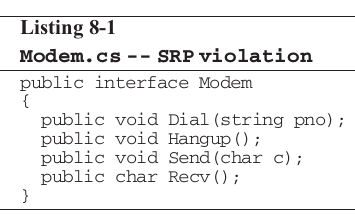 </td> <td> 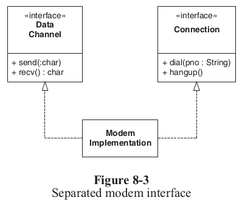 </td> </tr> </table> -- > If, on the other hand, the application is not changing in ways that cause the two responsibilities to change at different times, there is no need to separate them. Indeed, separating them would smell of needless complexity. [...] > > **An axis of change is an axis of change only if the changes occur.** > > Robert C. Martin et al. _"Agile Principles, Patterns, and Practices in C#"_ --- ### SRP: Is there an issue with the following code? <img src="https://blog.jetbrains.com/wp-content/uploads/2015/08/upsource-CR5SRP1.png" width="100%"> -- Depending on the use case of the code, it is likely that it is mixing responsibilities. > While this seems reasonable because it uses the data being gathered by the `onMessage` method, there are indications that this violates SRP. The `onMessage` and `getTweetMessageFromFullTweet` methods are both about receiving and parsing a Twitter message, whereas `draw` is all about reorganising that data for displaying on a UI. > > [JetBrains: What to look for in a Code Review: SOLID Principles](https://blog.jetbrains.com/upsource/2015/08/31/what-to-look-for-in-a-code-review-solid-principles-2/) <tiny> Source: <a href="https://blog.jetbrains.com/upsource/2015/08/31/what-to-look-for-in-a-code-review-solid-principles-2/">JetBrains: What to look for in a Code Review: SOLID Principles</a>. </tiny> --- ### SRP in [libgit2sharp](https://github.com/libgit2/libgit2sharp) Consider the class [`Repository`](https://github.com/libgit2/libgit2sharp/blob/master/LibGit2Sharp/Repository.cs) in the in [`libgit2sharp`](https://github.com/libgit2/libgit2sharp) project. Amongst others, it contains the following methods: - `LookupCommit` - `Discover` - `CheckoutTree` - `Init` - `Checkout` - `RegisterForCleanup` - `EagerlyLoadComponentsWithSpecifiedPaths` - `ToFilePaths` - `Commit` - `Blame` - `ReloadFromDisk` - `AddToIndex` - `UpdateHeadAndTerminalReference` - `UpdatePhysicalIndex` -- For example, what about the methods: * [`ToFilePaths`](https://github.com/libgit2/libgit2sharp/blob/1af49546917b69499f2d41cf844509c53b37eaca/LibGit2Sharp/Repository.cs#L1636)? * [`Blame`](https://github.com/libgit2/libgit2sharp/blob/1af49546917b69499f2d41cf844509c53b37eaca/LibGit2Sharp/Repository.cs#L928)? --- ### SRP: Central to software design > The Single-Responsibility Principle is one of the simplest of the principles but one of the most difficult to get right. Conjoining responsibilities is something that we do naturally. Finding and separating those responsibilities is much of what software design is really about. > > Robert C. Martin et al. _"Agile Principles, Patterns, and Practices in C#"_ --- ### The Open/Closed Principle (OCP) > Software entities (classes, modules, functions, etc.) should be open for extension but closed for modification. > > Robert C. Martin et al. _"Agile Principles, Patterns, and Practices in C#"_ -- ------------- > "You should be able to extend the behavior of a system without having to modify that system." > > [J. Ellis-Jones. Why the Open Closed Principle is the one you need to know but don’t.](https://hackernoon.com/why-the-open-closed-principle-is-the-one-you-need-to-know-but-dont-176f7e4416d) --- ### OCP: Quiz What is the issue of the following code with respect to OCP? ```csharp public IList<Color> GetFlagColors(Nationality nationality) { List<Color> result; switch (nationality) { case Nationality.DUTCH: result = new List<Color> { Color.Red, Color.White, Color.Blue }; break; case Nationality.BELGIAN: result = new List<Color> { Color.Black, Color.Yellow, Color.Red }; break; case Nationality.ITALIAN: result = new List<Color> { Color.Green, Color.White, Color.Red }; break; case Nationality.UNCLASSIFIED: default: result = new List<Color> { Color.Gray }; break; } return result; } ``` --- ```csharp public interface IFlag { IList<Color> Colors { get; } } public class DutchFlag : IFlag { public IList<Color> Colors { get { return new List<Color> { Color.Red, Color.White, Color.Blue }; } } } public class ItalianFlag : IFlag { public IList<Color> Colors { get { return new List<Color> { Color.Green, Color.White, Color.Red }; } } } private static readonly Dictionary<Nationality, IFlag> FLAGS = new Dictionary<Nationality, IFlag>(); static FlagFactory() { FLAGS[Nationality.DUTCH] = new DutchFlag(); FLAGS[Nationality.BELGIAN] = new BelgianFlag(); FLAGS[Nationality.ITALIAN] = new ItalianFlag(); } public IList<Color> GetFlagColors(Nationality nationality) { IFlag flag = FLAGS[nationality]; flag = flag ?? new DefaultFlag(); return flag.Colors; } ``` --- ### OCP: What is the issue of the following code with respect to OCP? 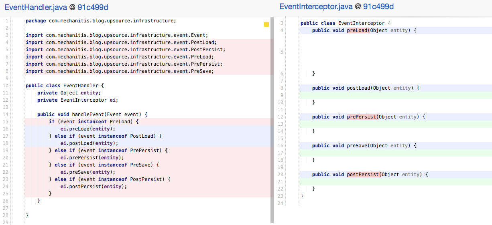 <tiny> Source: <a href="https://blog.jetbrains.com/upsource/2015/08/31/what-to-look-for-in-a-code-review-solid-principles-2/">JetBrains: What to look for in a Code Review: SOLID Principles</a>. </tiny> --- ### OCP: What is the issue of the following code with respect to OCP? <img src="https://blog.jetbrains.com/wp-content/uploads/2015/08/upsource-CR5-OCP-remove-if.png" width="100%"> <tiny> Source: <a href="https://blog.jetbrains.com/upsource/2015/08/31/what-to-look-for-in-a-code-review-solid-principles-2/">JetBrains: What to look for in a Code Review: SOLID Principles</a>. </tiny> --- ### OCP: What is the issue of the following code with respect to OCP? <img src="https://blog.jetbrains.com/wp-content/uploads/2015/08/upsource-CR5-OCP3.png" width="100%"> <tiny> Source: <a href="https://blog.jetbrains.com/upsource/2015/08/31/what-to-look-for-in-a-code-review-solid-principles-2/">JetBrains: What to look for in a Code Review: SOLID Principles</a>. </tiny> --- ### OCP: Quiz Can one design software to always adhere to the open-source principle? -- > In general, no matter how “closed” a module is, there will always be some kind of change against which it is not closed. There is no model that is natural to all contexts! > > Since **closure cannot be complete**, it must be **strategic**. That is, the designer must choose the kinds of changes against which to close the design, must guess at the kinds of changes that are most likely, and then construct abstractions to protect against those changes. --- ### OCP: Stimulating change > * We write tests first. Testing is one kind of usage of the system. By writing tests first, we force the system to be testable. > * We use very short development cycles: days instead of weeks. > * We develop features before infrastructure and frequently show those features to stakeholders. > * We develop the most important features first. > * We release the software early and often. We get it in front of our customers and users as quickly and as often as possible. > > Robert C. Martin et al. _"Agile Principles, Patterns, and Practices in C#"_ -- ### OCP: Recommendation > apply abstraction only to those parts of the program that exhibit frequent change. _Resisting premature abstraction is as important as abstraction itself._ > > Robert C. Martin et al. _"Agile Principles, Patterns, and Practices in C#"_ --- ### The Liskov Substitution Principle (LSP) > Subtypes must be substitutable for their base types. > > > Robert C. Martin et al. _"Agile Principles, Patterns, and Practices in C#"_ --- ### LSP: Quiz What is the issue with the following software with respect to the Liskov Separation Principle? 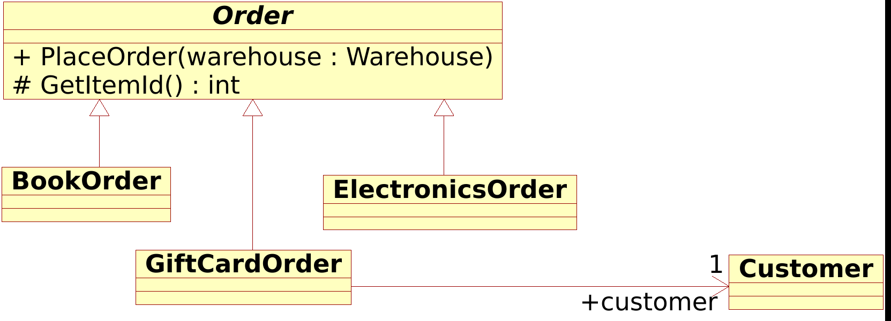 -- > **ISA is about behavior** Behaviorally, a `[GiftCardOrder]` is not an `[Order]`, and it is behavior that software is really all about. LSP makes it clear that in OOD, the IS-A relationship pertains to behavior that can be reasonably assumed and that clients depend on. -- > **Validity is not intrinsic** The Liskov Substitution Principle leads us to a very important conclusion: _A model, viewed in isolation, cannot be meaningfully validated. The validity of a model can be expressed only in terms of its clients._ > > Robert C. Martin et al. _"Agile Principles, Patterns, and Practices in C#"_ --- ### LSP Violation in code <table> <tr> <td> <img src="https://blog.jetbrains.com/wp-content/uploads/2015/08/upsource-CR5-LSP4.png" width="100%"> </td> <td> <img src="https://blog.jetbrains.com/wp-content/uploads/2015/08/upsource-CR5-LSP12.png" width="90%"> </td> </tr> </table> -- <img src="https://blog.jetbrains.com/wp-content/uploads/2015/08/upsource-CR5-LSP2.png" width="60%"> <tiny> Source: <a href="https://blog.jetbrains.com/upsource/2015/08/31/what-to-look-for-in-a-code-review-solid-principles-2/">JetBrains: What to look for in a Code Review: SOLID Principles</a>. </tiny> --- ### LSP: Heuristics > Some simple heuristics can give you some clues about LSP violations. These heuristics all have to do with derivative classes that somehow remove functionality from their base classes. A derivative that does less than its base is usually not substitutable for that base and therefore violates LSP. > > Robert C. Martin et al. _"Agile Principles, Patterns, and Practices in C#"_ -- ------- > A routine redeclaration [in a derivative] may only replace the original precondition by one equal or weaker, and the original post-condition by one equal or stronger. > > [B. Meyer, _"Object-Oriented Software Construction"_](http://ndl.ethernet.edu.et/bitstream/123456789/29339/1/21.pdf) --- ### LSP: Potential Solutions — Design by Contract * In code ```eiffel class DICTIONARY [ELEMENT] feature put (x: ELEMENT; key: STRING) is -- Insert x so that it will be retrievable -- through key. require count <= capacity not key.empty ensure has (x) item (key) = x count = old count + 1 end ... Interface specifications of other features ... invariant 0 <= count count <= capacity end ``` <tiny> Source: <a href="https://www.eiffel.com/values/design-by-contract/introduction/ ">Building bug-free O-O software: An Introduction to Design by Contract™</a>. </tiny> * Via assertions on method entry/exit * Via unit tests --- ### The Dependency-Inversion Principle (DIP) > A. High-level modules should not depend on low-level modules. Both should depend on abstractions. > > B. Abstractions should not depend upon details. Details should depend upon abstractions. > > Robert C. Martin et al. _"Agile Principles, Patterns, and Practices in C#"_ -- -------- > Depend upon Abstractions. Do not depend upon concretions. > > [JetBrains: What to look for in a Code Review: SOLID Principles](https://blog.jetbrains.com/upsource/2015/08/31/what-to-look-for-in-a-code-review-solid-principles-2/) --- ### DIP: Quiz What is the problem of the following code with respect to the dependency inversion principle? <img src="https://blog.jetbrains.com/wp-content/uploads/2015/08/upsource-CR5-DIP1.png" width="90%"> <tiny> Source: <a href="https://blog.jetbrains.com/upsource/2015/08/31/what-to-look-for-in-a-code-review-solid-principles-2/">JetBrains: What to look for in a Code Review: SOLID Principles</a>. </tiny> --- ### DIP: Quiz a possible solution Isolate the low-level database access code into a data access object (DAO) and depend on an abstraction over it. 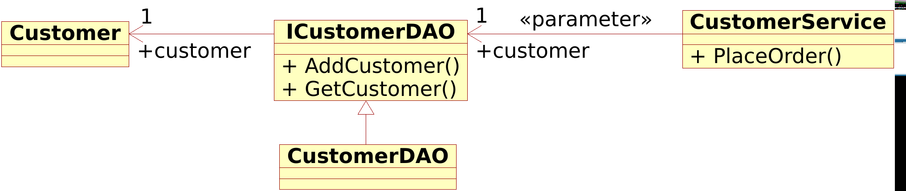 --- ### The Interface Segregation Principle (ISP) > Clients should not be forced to depend on methods they do not use. > > Robert C. Martin et al. _"Agile Principles, Patterns, and Practices in C#"_ --- ### ISP: Quiz What was the issue with the design below with respect to the ISP? 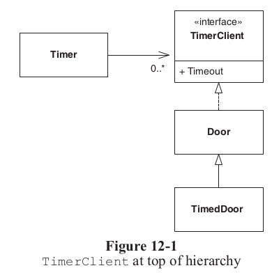 -- > The interface of Door has been polluted with a method that it does not require. It has been forced to incorporate this method solely for the benefit of one of its subclasses. If this practice is pursued, every time a derivative needs a new method, that method will be added to the base class. This will further pollute the interface of the base class, making it “fat.” > > Robert C. Martin et al. _"Agile Principles, Patterns, and Practices in C#"_ --- ### ISP: Quiz Is there an issue with the following interface (`IRepository`) from [libgit2sharp](https://github.com/libgit2/libgit2sharp) with respect to the ISP? ```csharp public interface IRepository : IDisposable { Branch Head { get; } Configuration Config { get; } Index Index { get; } ReferenceCollection Refs { get; } IQueryableCommitLog Commits { get; } BranchCollection Branches { get; } TagCollection Tags { get; } RepositoryInformation Info { get; } Diff Diff { get; } ObjectDatabase ObjectDatabase { get; } NoteCollection Notes { get; } SubmoduleCollection Submodules { get; } WorktreeCollection Worktrees { get; } void Checkout(Tree tree, IEnumerable<string> paths, CheckoutOptions opts); void CheckoutPaths(string committishOrBranchSpec, IEnumerable<string> paths, CheckoutOptions checkoutOptions); GitObject Lookup(ObjectId id); GitObject Lookup(string objectish); GitObject Lookup(ObjectId id, ObjectType type); GitObject Lookup(string objectish, ObjectType type); Commit Commit(string message, Signature author, Signature committer, CommitOptions options); void Reset(ResetMode resetMode, Commit commit); void Reset(ResetMode resetMode, Commit commit, CheckoutOptions options); void RemoveUntrackedFiles(); RevertResult Revert(Commit commit, Signature reverter, RevertOptions options); MergeResult Merge(Commit commit, Signature merger, MergeOptions options); MergeResult Merge(Branch branch, Signature merger, MergeOptions options); MergeResult Merge(string committish, Signature merger, MergeOptions options); Rebase Rebase { get; } MergeResult MergeFetchedRefs(Signature merger, MergeOptions options); CherryPickResult CherryPick(Commit commit, Signature committer, CherryPickOptions options); Ignore Ignore { get; } Network Network { get; } StashCollection Stashes { get; } BlameHunkCollection Blame(string path, BlameOptions options); FileStatus RetrieveStatus(string filePath); RepositoryStatus RetrieveStatus(StatusOptions options); string Describe(Commit commit, DescribeOptions options); void RevParse(string revision, out Reference reference, out GitObject obj); } public sealed class Repository : IRepository { ... } ``` --- class: center, middle # Discussion --- ### SOLID (LSP) in the wild Out of [205 issues on GitHub that contain the terms `Liskov substitution`](https://github.com/search?l=C%23&q=Liskov+substitution+language%3AC%23+language%3AC%23&type=Issues), the majority seems to be in educational repositories. However, some examples of issues discussing or fixing LSP are: * <https://github.com/ordercloud-api/ordercloud-dotnet-sdk/issues/60> * <https://github.com/rabbitmq/rabbitmq-dotnet-client/pull/1212> * <https://github.com/dotnet/maui/issues/6821> * <https://github.com/dotnet/roslyn-analyzers/issues/6028> * <https://github.com/Azure/azure-libraries-for-net/issues/729> --- ### What is the problem with SOLID Design Principles and Design Smells? * Highly subjective * Cannot be measured objectively and automatically -- I am not aware of **scientific evidence** that application of SOLID principles (or other design principles) in (agile) software engineering leads to more **flexible**, **maintainable**, and **reusable** software. Some studies in that area that are non-conclusive with regards to the above are: * [_Measuring Impact of Dependency Injection on Software Maintainability_](https://www.mdpi.com/2073-431X/11/9/141/pdf?version=1663661562) * [H.K. Jun et al. _Evaluating the Impact of Design Patterns on Software Maintainability: An Empirical Evaluation_](https://www.researchgate.net/profile/Muhammad-Ehsan-Rana/publication/357824214_Evaluating_the_Impact_of_Design_Patterns_on_Software_Maintainability_An_Empirical_Evaluation/links/6201f2185bdf0f2ef854c480/Evaluating-the-Impact-of-Design-Patterns-on-Software-Maintainability-An-Empirical-Evaluation.pdf) * [J. Bräuer et al. _Measuring object-oriented design principles: The results of focus group-based research_](https://www.sciencedirect.com/science/article/pii/S016412121830044X) * [G. Samarthyam et al. _MIDAS: A design quality assessment method for industrial software_](https://ieeexplore.ieee.org/document/6606640) --- ### What is the problem with SOLID Design Principles and Design Smells? The only thing that we know that matters is _size_. The smaller the better or the ["Worse is better" design principle](https://en.wikipedia.org/wiki/Worse_is_better) > Result: **None of the 12 investigated smells** was significantly associated with increased effort after we adjusted for file size and the number of changes; [...] **File size** and the **number of changes explained** almost all of the modeled **variation in effort**. Conclusion: The effects of the 12 smells on maintenance effort were limited. To **reduce maintenance effort**, a **focus on reducing code size** and the work practices that **limit the number of changes** may be more beneficial than refactoring code smells. > > [D.I.K. Sjøberg et al. _"Quantifying the Effect of Code Smells on Maintenance Effort"_](https://sci-hub.ru/10.1109/tse.2012.89) -- #### Good theses topics! <img src="https://aucklandecology.files.wordpress.com/2018/05/write-consistently.gif" width="30%"> Studying effectiveness of certain design principles on **flexibility**, **maintainability**, or **reusability** of software are good thesis projects. Talk to me if you are interested. --- ### Hmmm, why apply SOLID then? This is the state of the art in software engineering. We do not know better what works and what does not. For example the SOLID design principles are one "bid on" how to adapt object-oriented software for change. Other people have other opinions on software design principles: --- ### The Unix philosophy > 1. Make each program do one thing well. To do a new job, build afresh rather than complicate old programs by adding new "features". > 2. Expect the output of every program to become the input to another, as yet unknown, program. Don't clutter output with extraneous information. Avoid stringently columnar or binary input formats. Don't insist on interactive input. > 3. Design and build software, even operating systems, to be tried early, ideally within weeks. Don't hesitate to throw away the clumsy parts and rebuild them. > 4. Use tools in preference to unskilled help to lighten a programming task, even if you have to detour to build the tools and expect to throw some of them out after you've finished using them. > > <https://en.wikipedia.org/wiki/Unix_philosophy> --- ### KISS, YAGNI, CUPID, ... * _Keep It Simple Stupid_ (KISS) or _Keep It Small And Simple_ > The principle is best exemplified by the story of Johnson handing a team of design engineers a handful of tools, with the challenge that the jet aircraft they were designing must be repairable by an average mechanic in the field under combat conditions with only these tools. Hence, the "stupid" refers to the relationship between the way things break and the sophistication available to repair them. > > <https://en.wikipedia.org/wiki/KISS_principle> -- * _You Aren't Gonna Need It_ (YAGNI) > a principle which arose from extreme programming (XP) that states a programmer should not add functionality until deemed necessary. > > <https://en.wikipedia.org/wiki/You_aren%27t_gonna_need_it> -- * CUPID Design Principles > * **Composable**: plays well with others > * **Unix philosophy**: does one thing well > * **Predictable**: does what you expect > * **Idiomatic**: feels natural > * **Domain-based**: the solution domain models the problem domain in language and structure > > [Dan North _"CUPID—for joyful coding"_](https://dannorth.net/2022/02/10/cupid-for-joyful-coding/) <!-- CUPID https://dannorth.net/2021/03/16/cupid-the-back-story/ > Why Every Element of SOLID is Wrong > > https://speakerdeck.com/tastapod/why-every-element-of-solid-is-wrong --> --- ### How do tools assess SOLID design? For example, [_NDepend_](https://www.ndepend.com/) is a code quality assessment tool. In a blog post, the company behind the tool explains how to [_"Use NDepend to Measure How SOLID Your Code Is"_](https://blog.ndepend.com/solid-code/) via the following static analysis rules: * [Avoid Types Too Big](https://www.ndepend.com/default-rules/NDepend-Rules-Explorer.html?ruleid=ND1000#!) (**SRP**) * [Avoid Types With Too Many Methods](https://www.ndepend.com/default-rules/NDepend-Rules-Explorer.html?ruleid=ND1001#!) (**SRP**) * [Avoid Types With Too Many Fields](https://www.ndepend.com/default-rules/NDepend-Rules-Explorer.html?ruleid=ND1002#!) (**SRP**) * [Avoid Methods That Are Too Big and Too Complex](https://www.ndepend.com/default-rules/NDepend-Rules-Explorer.html?ruleid=ND1003#!) (**SRP**) * [Avoid Methods With Too Many Parameters](https://www.ndepend.com/default-rules/NDepend-Rules-Explorer.html?ruleid=ND1004#!) (**SRP**) * [Avoid Methods With Too Many Local Variables](https://www.ndepend.com/default-rules/NDepend-Rules-Explorer.html?ruleid=ND1008#!) (**SRP**) * [Base class should not use derivatives](https://www.ndepend.com/default-rules/NDepend-Rules-Explorer.html?ruleid=ND1201#!) (**OCP**) * [Do implement methods that throw NotImplementedException](https://www.ndepend.com/default-rules/NDepend-Rules-Explorer.html?ruleid=ND1312#!) (**LSP**) * [Avoid interfaces too big](https://www.ndepend.com/default-rules/NDepend-Rules-Explorer.html?ruleid=ND1200#!) (**ISP**) * [Higher cohesion - lower coupling](https://www.ndepend.com/default-rules/NDepend-Rules-Explorer.html?ruleid=ND1408#!) (**DIP**) --- ### How do tools assess SOLID design? Not at all, they focus on other (similar) design principles. For example, [_BetterCodeHub_](https://www.bettercodehub.com/)/[_Sigrid_](https://www.softwareimprovementgroup.com/solutions/sigrid-software-assurance-platform/) assess the following ten guidelines via static analysis rules, see [J. Visser et al._Building Maintainable Software, C# Edition: Ten Guidelines for Future-Proof Code_](https://www.labunix.uqam.ca/~tremblay_gu/MGL7460/Liens/Building_Maintainable_Software_SIG.pdf): 1. Write Short Units of Code 1. Write Simple Units of Code 1. Write Code Once 1. Keep Unit Interfaces Small 1. Separate Concerns in Modules 1. Couple Architecture Components Loosely 1. Keep Architecture Components Balanced 1. Keep Your Codebase Small 1. Automate Tests 1. Write Clean Code --- ### Your turn!  * Go to the exercise session. * Work in your assignment triplet, see <https://github.com/itu-bdsa/assignment-03/README_GROUPS.md> * Work on the exercises of the assignment, see <https://github.com/itu-bdsa/assignment-03/README.md> Via [LearnIT Hand-in](https://learnit.itu.dk/mod/assign/view.php?id=165090), hand-in a link to the Git repository on GitHub with your solution, at latest on Friday at 10:00. --- ### Last time advertisement